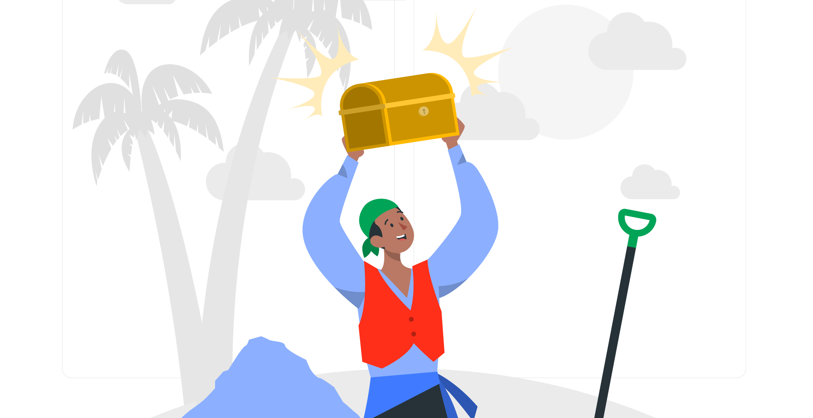
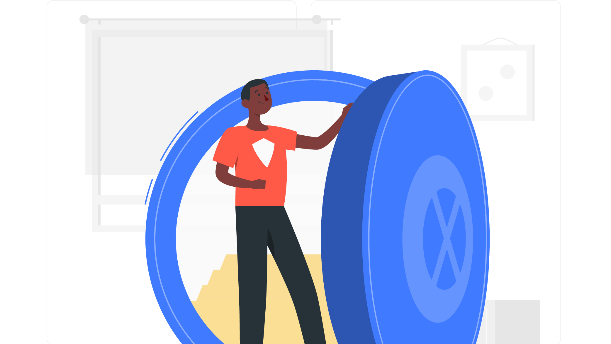

Bienvenue, {{ user.prenom.split(' ')[0] }}
Vous pouvez choisir parmis les differentes actions proposés ci dessous.

Signaler un objet trouvé
Enregistrer sur la plateforme un objet que vous avez trouvé.

Mes objets
Vous pouvez lié vos objets a votre identifiant sur la plateforme ou déclaré un objet perdu pour être notifier lorsque quelqu'un l'aura retrouvé.
Si vous avez un objet perdu, vous pouvez l'enregistré parmis vos objets.